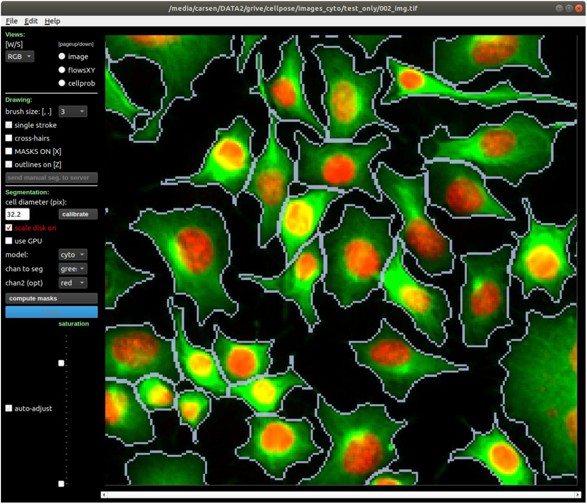
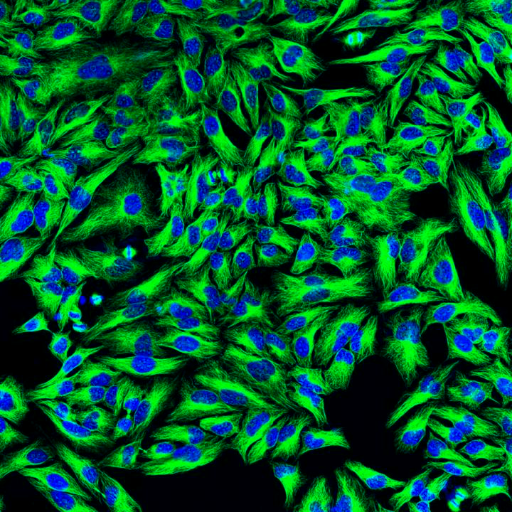
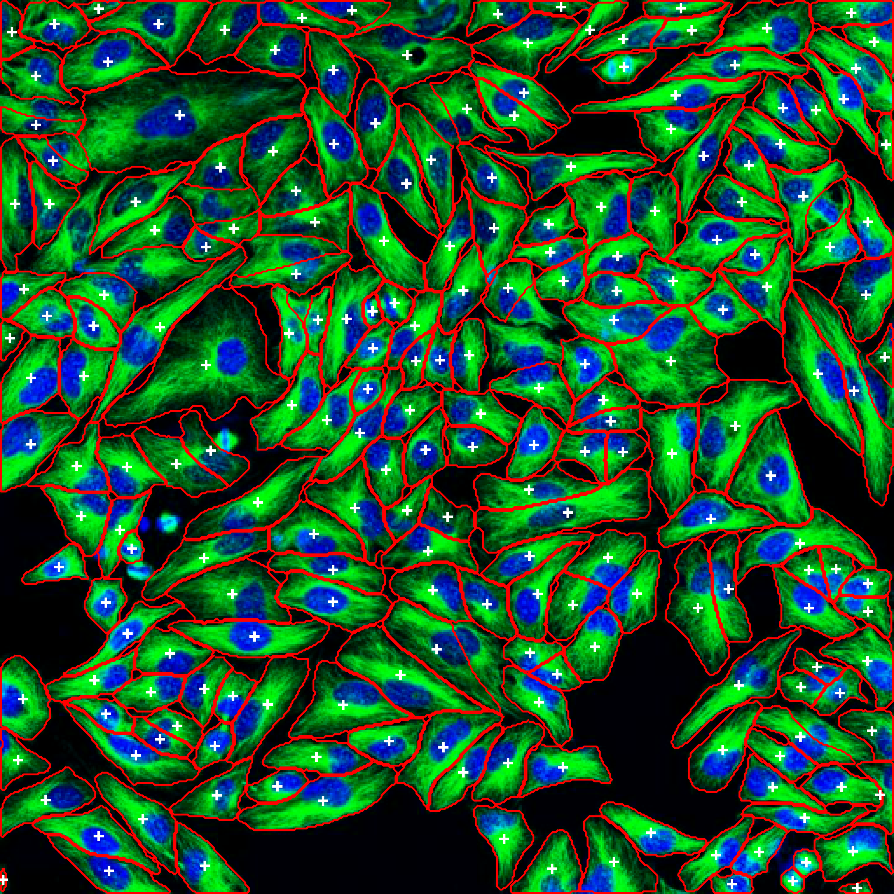
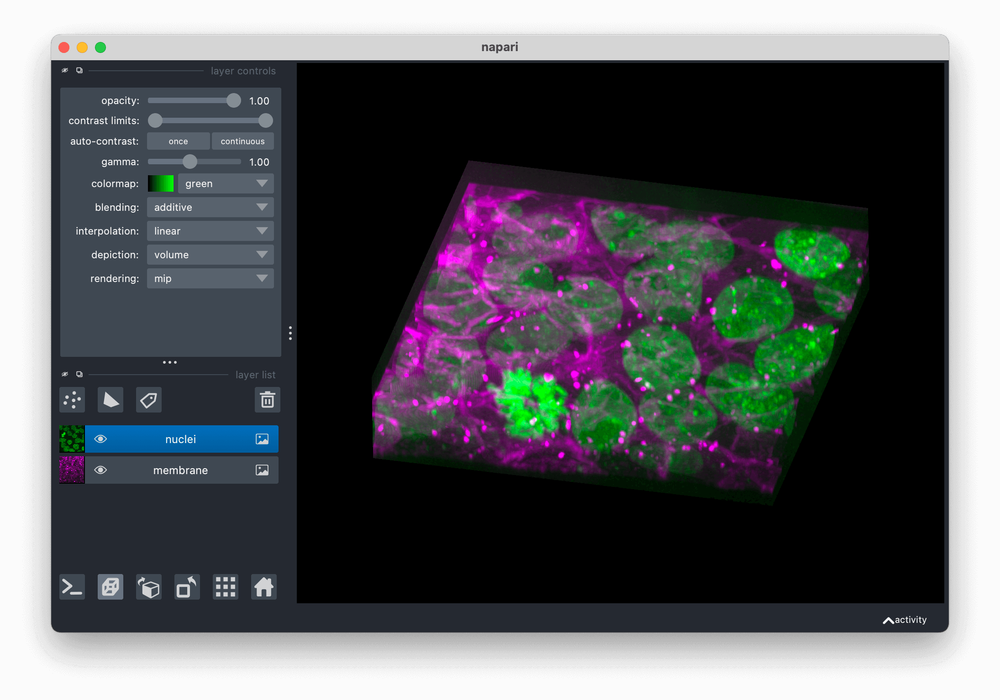
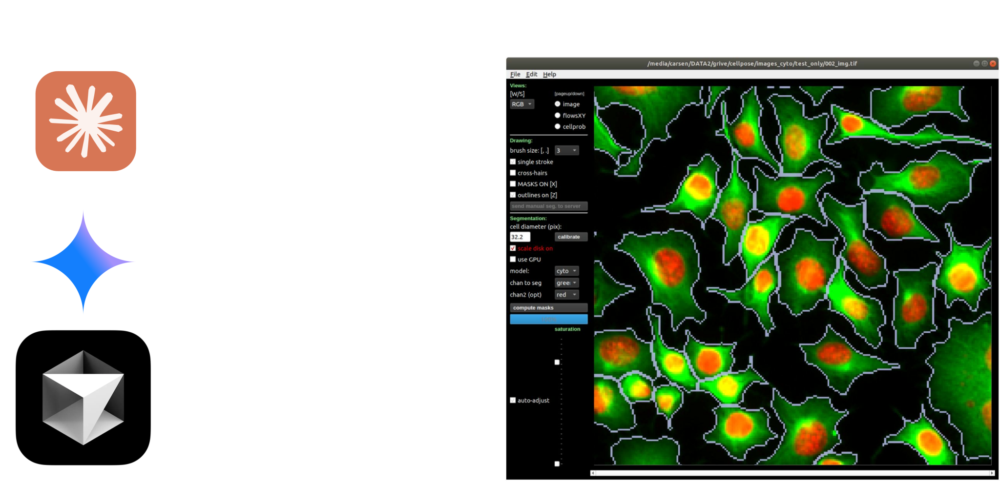

Cellpose
Cellpose is a generalist deep learning algorithm for cellular segmentation from microscopy images. It segments cell bodies, membranes, and nuclei across diverse microscopy techniques without requiring specialized models or parameter tuning. Trained on 70,000+ segmented objects from 608 diverse images, Cellpose provides multiple pretrained models, image restoration capabilities, and custom training support [1].

Cellpose GUI showing fluorescence microscopy segmentation with flow field overlays
MCP (Model Context Protocol)
The Problem
AI assistants like ChatGPT or Claude excel at text generation but cannot directly interact with software applications. For scientific researchers, this means AI cannot access standard analysis tools or proprietary data formats.
The Solution: MCP as a Universal Adapter
The Model Context Protocol (MCP) is an open-source standard developed by Anthropic that acts as a "universal remote" for AI. Instead of building custom connections for each tool, MCP provides one standardized communication language.
How It Works
Cellpose-MCP
Cellpose-mcp is an MCP server that enables AI assistants to perform Cellpose segmentation, image restoration, and model training through natural language commands. Researchers can execute sophisticated workflows using plain English, automate batch processing, and integrate with visualization tools for immediate feedback.
No Coding needed — Describe your analysis in plain English
Server
Capabilities: cellpose-mcp exposes comprehensive Cellpose functionality through 13+ MCP tools:
Segmentation: segment_cells_2d (2D images, multiple models), segment_cells_3d (3D volumes), segment_cells_batch (parallel batch processing)
Image Restoration: denoise_image, deblur_image, upsample_image, restore_and_segment (combined pipeline)
Training: train_segmentation_model, train_restoration_model (custom model training)
Utilities: list_available_models, estimate_cell_diameter, save_masks, load_image_info
Example
User Prompt: "Segment the cells in image.tif and show the results in napari"
Input Image: image.tif - Fluorescence microscopy image with green-stained cytoplasm and blue-stained nuclei


Complete AI-driven workflow: Original fluorescence image (left) and segmented cells with annotations (right)
Integration with napari
Seamless integration with napari-mcp [2] enables AI-driven visualization of segmentation results in the napari [3] viewer.

napari viewer displaying 3D multi-channel microscopy data with nuclei and membrane layers
No manual file handling — immediate visual feedback — iterative refinement
Advantages
- AI Assisted: Natural language interface enables biologists without coding experience to perform sophisticated analyses
- Seamless Integration: The AI agent sees what you are seeing and can help you with the analysis
- Rapid Prototyping: Prototype workflows conversationally without context-switching between tools
- Private and Secure: Your data is not sent to the server and stays on your local machine
- Intelligent Automation: AI suggests optimal parameters and generates batch processing scripts
- Workflow Automation: From raw images to quantitative analysis can be done in a one place and the AI agent has context of the entire workflow
- Extensible: New analysis tools can be added as MCP servers without changing user workflows, enabling incremental upgrades of scientific pipelines
Conclusions
Cellpose-mcp can transform scientific software from tools requiring technical expertise into conversational partners that amplify researcher capabilities. By combining the generalist power of Cellpose with the natural language interface of modern AI assistants, we make sophisticated cell segmentation accessible to a broader scientific community. The integration with napari-mcp [2] enables complete workflows from segmentation to interactive visualization, reducing barriers to entry while maintaining the full power of advanced image analysis tools.

MCP enables AI-driven tool control for scientific computing
Features
TIFF, PNG, NPY
FastMCP backend
Supported AI Applications:
-
 Cursor IDE — Full Support
Cursor IDE — Full Support
-
 Claude Desktop — Full Support
Claude Desktop — Full Support
-
 Antigravity — Full Support
Antigravity — Full Support
-
Claude Code — Full Support
- VS Code — Full Support